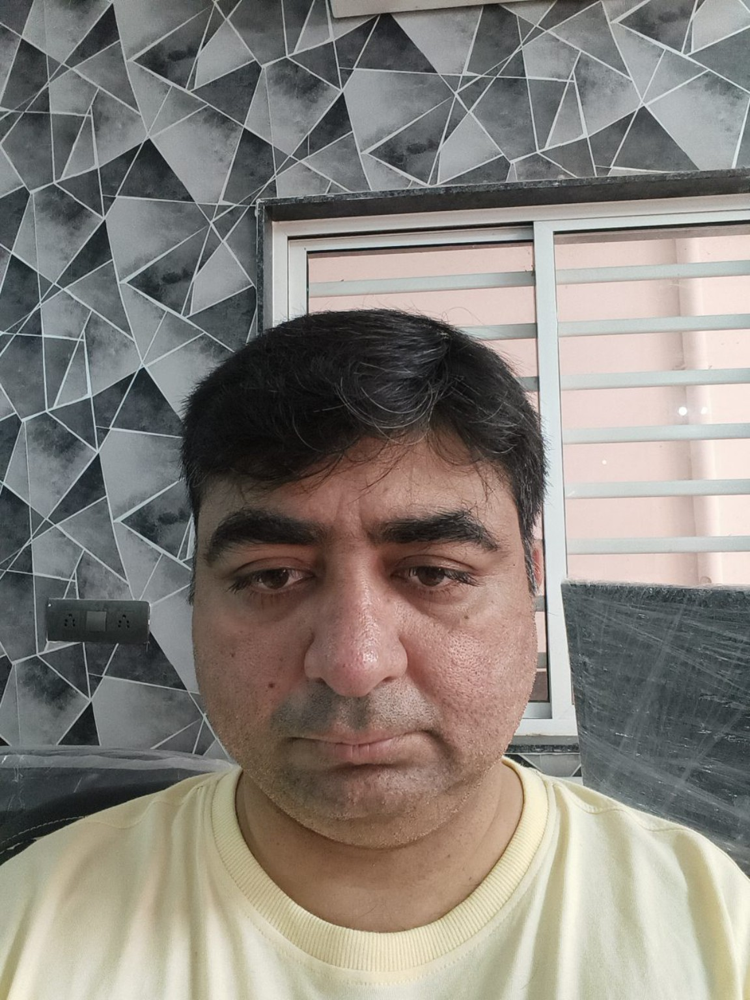

Geotechnical Engineering
Foundation capacity, settlement, interpretation, design review and engineering assessment.
GEOTECHNICAL • GEOSYNTHETICS • INFRASTRUCTURE
Geotechnical & Geosynthetics Engineering
M.Tech. (Geotechnical Engineering), IIT Kanpur
Founder & Director, C-PHI Consult Pvt. Ltd.

ABOUT
I work at the intersection of geotechnical engineering, geosynthetics, investigation and practical infrastructure design. Through C-PHI Consult, the focus is on reliable engineering interpretation, optimized solutions and field-aware decision making.
C-PHI Consult's current company profile records 180+ design projects and 200+ geotechnical soil investigation projects, across sectors including highways, railways, ports, hill roads, power, landfills, water and wastewater infrastructure, and buildings.
AREAS OF EXPERTISE
Foundation capacity, settlement, interpretation, design review and engineering assessment.
Reinforced soil structures, slopes, basal reinforcement and application-focused solutions.
Assessment and design of practical improvement strategies for problematic ground conditions.
Root-cause investigations, failure assessment and technical interpretation of distress.
Field and laboratory investigation with emphasis on representative, design-useful data.
Slope stability, landfill stability, deep excavation and geotechnical risk assessment.
SELECTED WORK
Selected C-PHI work includes reinforced soil wall design and geotechnical investigation for major infrastructure corridors. A representative project involved approximately 200,000 m² of reinforced soil wall work across multiple structures.
HIGHWAYS • RSW • GEOTECHNICALForensic geotechnical investigations where the objective is not only to understand distress, but to establish technically defensible causes and practical remedial direction.
FORENSIC • RCA • REMEDIATIONAssessment of challenging high slopes, including landfill and veneer stability, with attention to geometry, groundwater, interfaces and realistic failure mechanisms.
SLOPE • LANDFILL • STABILITYField investigation and reporting for infrastructure projects, combining drilling, sampling, testing and engineering interpretation.
INVESTIGATION • DRILLING • REPORTINGPROFESSIONAL ENGAGEMENT
Professional activity includes engagement with the Indian geotechnical and geosynthetics community, technical seminars, university sessions, conferences and panel discussions on subjects such as ground improvement, geosynthetics and field applications.
LOOKING FOR A GEOTECHNICAL PARTNER?